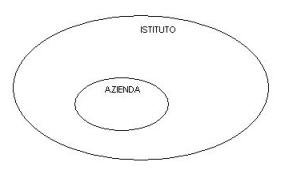
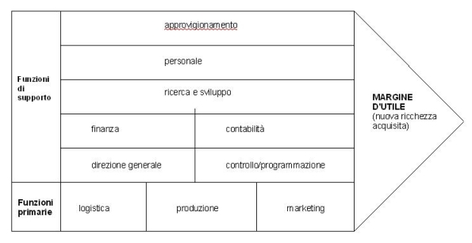
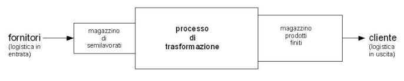
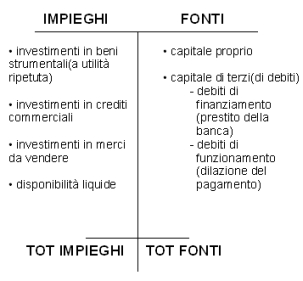

Torna alla pagina di Economia ed Organizzazione Aziendale
:: Economia ed Organizzazione Aziendale ::
Lezione 25/02/2008
Per definire l'azienda bisogna prima introdurre qualche concetto di base.
Ci sono:
- bisogni illimitati
- risorse limitate (sono sia Input che Output)
Output = f(Input) dove l'Output consiste nei PRODOTTI FINITI(che possono essere materiali o
immateriali), quindi ciò che viene prodotto.
mentre l'Input consiste nei FATTORI PRODUTTIVI(capitale e lavoro)
utilizzati per realizzare il prodotto
Per soddisfare i bisogni sono stati creati degli ISTITUTI:
- strutture stabili organizzate da organizzazioni di fattori produttivi che vengono coordinati per realizzare i fini dell'istituto stesso
- sono ad ex:
- famiglia
- impresa
- stato
- enti no profit
- ogni istituto svolge delle attività:
- modi per soddisfare i bisogni
- una parte di queste attività sono economiche
⇒ le attività economiche vengono realizzate dall'azienda (parte dell'istituto, quindi non solo impresa)

Attività Economiche
possono essere:
- di produzione
- di scambio (mercato. Legge domanda-offerta)
- di consumo (utilizzo di risorse per soddisfare i bisogni o per produrre)
- di risparmio (consumo differito. Sacrificio temporaneo per consumo successivo)
quindi le aziende si possono suddividere in:
- Aziende di Consumo: famiglia ⇒ l'attività ha il fine di soddisfare i bisogni dei componenti, che utilizzano risorse che derivano dal lavoro e dal risparmio(patrimonio).
- Aziende di Produzione: impresa ⇒ l'attività ha l'obiettivo di produrre beni e servizi per il mercato.
Utilizza risorse interne e risorse esterne(capitale di terzi, capitale proprio).
- Aziende Composte(combinazione delle prime due): stato ⇒ svolgono contemporaneamente sia attività di consumo che attività di produzione.
I beni e i servizi prodotti soddisfano i bisogni dell'azienda e di terzi.
Azienda
Definizione di Azienda(della dottrina ragioneristica): organizzazione economica-sociale caratterizzata da stabilità e duratura nel tempo.
Svolge attività economica che può essere:
- produzione di nuova ricchezza(az. di produzione)
- consumo di beni/servizi(az. di consumo)
L'attività economica si basa sull'organizzazione e sul coordinamento di fattori produttivi (K(capitale), L(lavoro)).
Definizione di Azienda(Codice Civile Art.2555): è il complesso dei beni organizzati dall'imprenditore per l'esercizio dell'attività di impresa(1942).
Azienda di produzione
Azienda di produzione=IMPRESA
Le attività svolte all'interno si possono aggregare in funzioni che hanno le seguenti caratteristiche:
- attività omogenee, stessa natura
- sono interdipendenti
e possono essere suddivise in:
FUNZIONI PRIMARIE
- logistica
- produzione
- marketing e vendite
FUNZIONI DI SUPPORTI
- approvigionamento
- personale
- ricerca e sviluppo
- finanza
- contabilità
- programmazione e controllo
- direzione generale
Catena Del Valore:

Logistica
- in ingresso(cioè delle risorse acquisite)
- in uscita(trasporto del prodotto finito)
PROCESSO di PRODUZIONE

Marketing
Si occupa di:
- costumer satisfaction
- analisi di mercato: target (sesso/età/reddito/...)
- strategie di marketing mix
- prodotto
- prezzo
- pubblicità
- target di clienti
Finanza
Si occupa del reperimento delle risorse finanziarie
Contabilità
Tenere memoria di tutte le operazioni che avvengono e che sono contabilmente rilevabili.
Può essere:
Generale: genera il bilancio
Analitica: analisi dei costi
Esercizio Impieghi - Fonti
COSTRUZIONE DI UN IMPRESA
distingue finanziamenti e investimenti
Punti principali:
- AVVIO attività commerciale.
- ACQUISTI fattori produttivi: fabbricati 80; arredi 30; attrezzature 40; merce da rivendere 20;
- per effettuare gli acquisti distinguiamo:
- l'imprenditore che apporta titoli di capitale proprio 100;
- finanziamento da parte di una banca 70;
- il denaro viene utilizzato per pagare i fornitori dei beni strumentali(tutti quei beni che possono essere usati per più esercizi).
I fornitori merci concedono dilazione del pagamento.
- la somma di denaro contante residua si deposita su un conto corrente bancario intestato alla nostra impresa.
RICHIESTA:
presentare un prospetto "impieghi e fonti di finanziamento" che riassuma le operazioni elencate.
NOTA:
Impieghi: indichiamo investimenti; disponibilità liquide (risorse finanziarie).
Fonti: da dove arrivano le risorse finanziarie che abbiamo a disposizione.

Nota: la somma delle due colonne deve essere uguale TOT IMPIEGHI = TOT FONTI.
(per costruzione; partita doppia).
SOLUZIONE:

1°modo per trovare il valore mancante:
TOTALE DENARO RICEVUTO DA FONTI: 100 + 70 = 170
TOTALE DENARO USCITO DALLE CASSE: 80 + 30 + 40 = 150
170 - 150 = 20 banca c/c
2°modo per trovare il valore mancante:
partire dall'Ipotesi che TOT FONTI = TOT IMPIEGHI
Torna alla pagina di Economia ed Organizzazione Aziendale